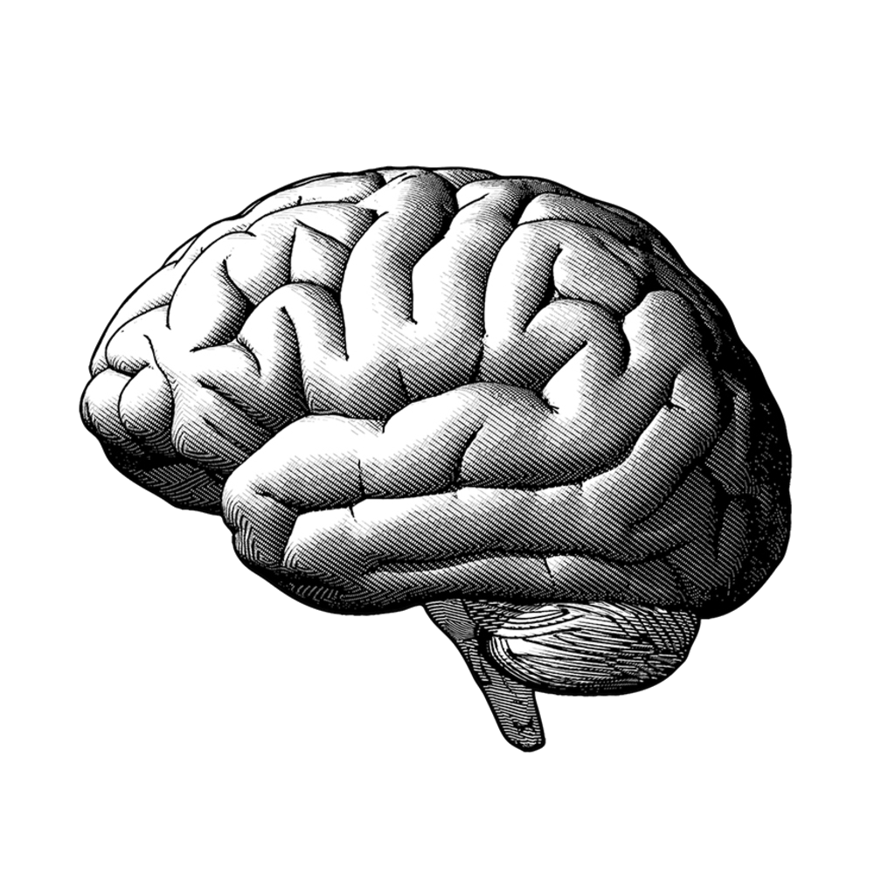

Introductie AI & ML
Wat is AI?
(AI is afkorting van Artificial Intelligence)
Wat is een beker?
Hoe weten we dat?
Wie heeft ons dat verteld?
Wie heeft ons dat geleerd?
Hoe hebben we dat geleerd?
Patronen
Patronen

Patronen